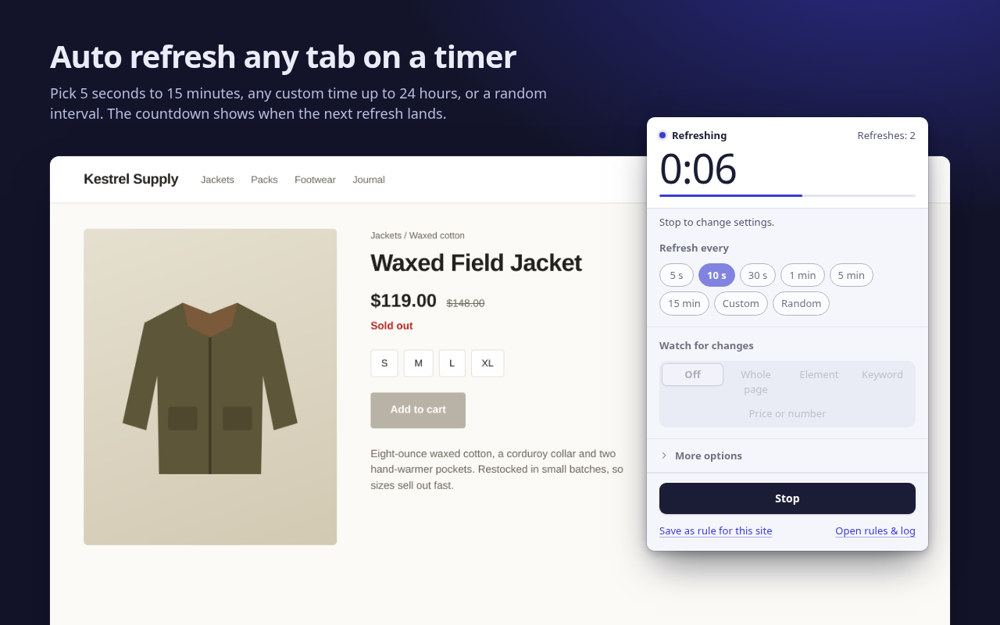

How to auto refresh a page in Chrome
Chrome has no built-in setting that reloads a tab on a timer. An extension does it in a few clicks. This guide uses RefreshWatch, which is free.
Set up auto refresh in four steps
- Add RefreshWatch to Chrome, then pin it from the puzzle-piece menu so the icon stays in the toolbar.
- Open the page you want to refresh and click the RefreshWatch icon.
- Under Refresh every, pick 5 s, 10 s, 30 s, 1 min, 5 min or 15 min. Choose Custom for any time from 1 second to 24 hours, or Random for a value between two times.
- Click Start. The badge on the icon counts down to the next reload, and the popup shows the countdown and how many refreshes have run. Click Stop when you're done.

That's all plain auto refresh needs. It doesn't ask for access to the site, because Chrome lets extensions reload a tab without reading it.
Pick an interval that fits
- Seconds for things that move fast, like a ticket sale that opens at a set time. Keep it short-lived: reloading a site every few seconds for hours is heavy on the site and on your laptop battery.
- One to fifteen minutes suits most waiting: restocks, appointment slots, job boards, a dashboard that should stay current.
- Random spreads reloads out, for example anywhere between 45 and 90 seconds, when you don't need exact timing.
Useful options
Open More options in the popup for these:
- Stop after a number of refreshes, or stop at a time of day.
- Hard refresh skips the browser cache, for pages that keep showing an old copy.
- Only refresh when I'm not on this tab, so a page never reloads while you're reading or typing in it.
- Keep scroll position, so a long page comes back where you left it. This one needs access to the site, and Chrome asks you for that site only.
- Click a button after each reload, such as a “Load more” or “Check availability” button, with a short wait you choose.
Refresh a page automatically every time you open it
If you come back to the same page often, choose Save as rule for this site. Next time you open a matching address, auto refresh starts by itself with the same settings. Rules can match an exact address, every page that starts with an address, or a wildcard pattern such as https://shop.example.com/*/restock. Manage them from Open rules & log.
Get told instead of watching
Auto refresh is half the job. If you're waiting for something specific, let RefreshWatch check the page after every reload and alert you. The website change alert guide shows how, the price drop alert guide covers prices, and the phone alerts guide sends the alert to your phone.
Good to know
Chrome doesn't let extensions script chrome:// pages or the Chrome Web Store, so watching doesn't work there. Plain auto refresh still does.
Without site access, plain auto refresh can't tell when you leave the site, so it keeps refreshing that tab until you stop it.
Refreshes run while Chrome is open and your computer is awake. Closing the tab stops its timer.